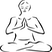
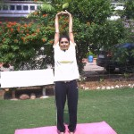

Kati Chakrasana
The waist rotation 
-
Stand straight with distance of approximately one foot or 30 centimeters between your feet. Arms stretched all the way out on the sides. Keep your back straight. This is your rest position.

-
Interlock your fingers and place the hand on top of your head. This is your rest position.
-
Now start taking long deep breath and
-
keeping your fingers interlocked, take your hand upwards such that your palms are now facing the sky.
-
simultaneously raise your body on your toes
-
Stretch your abdominal area
-
Hold this position for 1-2 seconds
-
Now start exhaling gradually and come to the rest position by
- placing the hands on top of your head.
- placing the heels on the floor
- relax for 1-2 seconds
- This is one repetition.
- Please do 8 such repetitions.
- This opens the first valve and allows the water to move to the next compartment.
Tiryaka Tadasana
The Side Bend
- Stand straight with distance of approximately one foot or 30 centimeters between your feet.
- Interlock your fingers and raise your hands upwards such that your palms are now facing the sky. Keep your back straight. This is your rest position.
Tiryaka Bhujangasana
The twisting cobra
- Lie down on your stomach. Keep a distance of approximately one foot or 30 centimeters between your feet, heels facing the sky. Toes should be curled inside. Keep your hands on the side of chest, just under the shoulder. This is your rest position.
- Now start taking long deep breath and
- raise your upper body, pushing the floor with both hands, this is cobra position. Do not lift your belly button.
- now rotate your head and upper body on the right side and look over your right shoulder at your left heel.
- hold the position for 1-2 sec.
- you will feel a stretch in your abdominal muscles.
- Now start exhaling gradually and come to the rest position, bring the upper body back to the ground.
- Try to do the above steps in a smooth flow along with inhalation and exhalation of breath.
- Same twist we will do on left side. Start taking long deep breath and
- raise your upper body
- now rotate your head and upper body on the left side and look over your left shoulder at your right heel.
- hold the position for 1-2 sec.
- Gradually exhale breath and come back to rest position.
- This is one repetition.
- Please do 10 such repetitions, 5 on each side.